Explore Rome
A Brief History
Rome developed from Iron Age settlements on the Palatine and Capitoline hills into the capital of the Roman Republic and Empire, leaving forums, baths, and aqueducts across the city. After the empire's western end, the papacy shaped medieval and Baroque Rome with churches, palaces, and pilgrim routes. Capture of Rome in 1871 made it capital of unified Italy, adding ministries, monuments, and boulevards.
Attractions Map
Top Sights & Activities
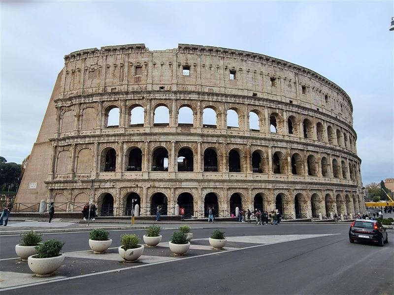
Colosseum
The Colosseum was inaugurated in AD 80 under Titus and expanded under Domitian. Built as an amphitheater for spectacles, it later became a quarry, fortress, and archaeological monument. Its surviving arcades remain one of the clearest structures from imperial Rome.
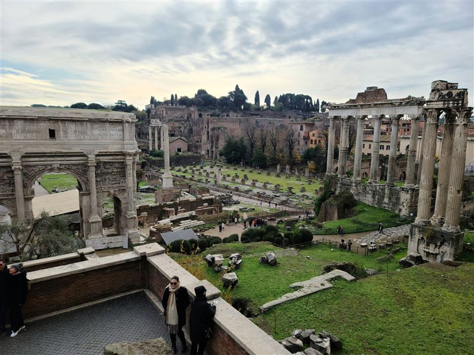
Roman Forum
The Roman Forum was the civic and ceremonial center of ancient Rome, containing temples, basilicas, arches, and senate buildings accumulated over many centuries. Today the archaeological area preserves the political landscape of the republic and empire between the Capitoline and Palatine hills.
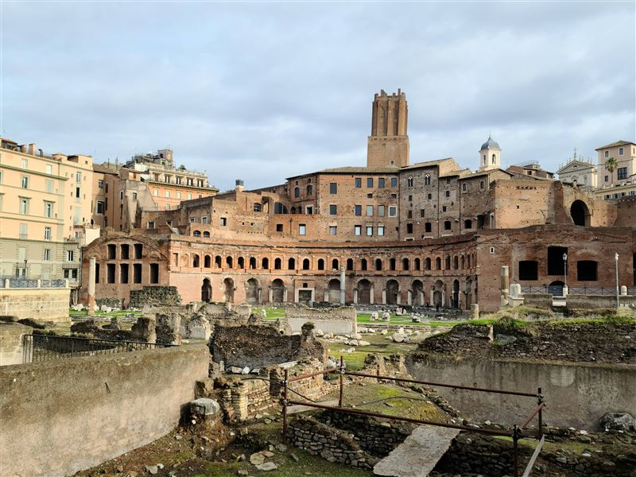
Trajan's Forum
Trajan's Forum was dedicated in AD 112 and formed the last and largest of the imperial fora. Designed with a large square, Basilica Ulpia, libraries, and Trajan's Column, it celebrated the emperor's Dacian campaigns and reshaped the political center of Rome.
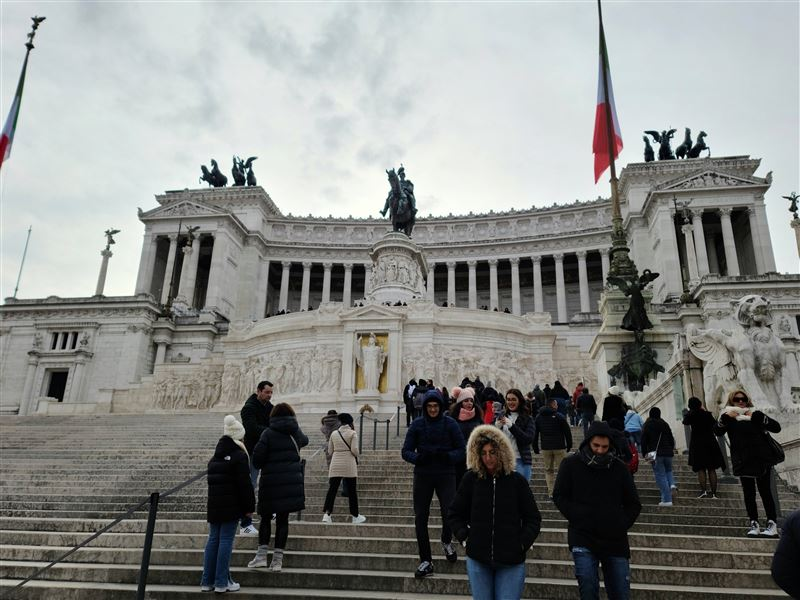
Monument to Victor Emmanuel II
The national monument to Victor Emmanuel II was built from 1885 to 1935 to honor the first king of unified Italy. Its marble terraces, stairways, and monumental setting between Piazza Venezia and the Capitoline slope became a defining feature of modern Rome.
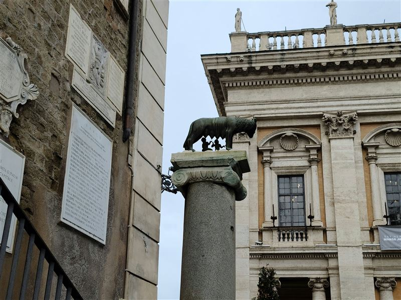
Lupa Capitolina
The Capitoline Wolf, or Lupa Capitolina, is associated with the legend of Romulus and Remus and became one of the main symbols of Rome. The bronze is displayed within the Capitoline Museums, where it is interpreted alongside the city's civic collections and classical sculpture.
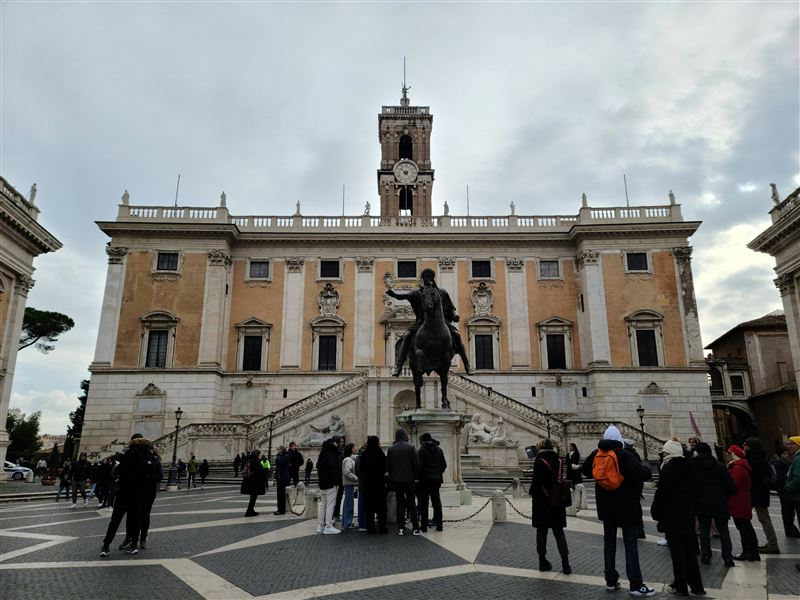
Piazza del Campidoglio
Piazza del Campidoglio was redesigned by Michelangelo in the 16th century for the Capitoline Hill, the ancient political high ground of Rome. Its trapezoidal layout, stairway approach, and palatial facades turned the hill into a civic setting for papal and municipal authority.
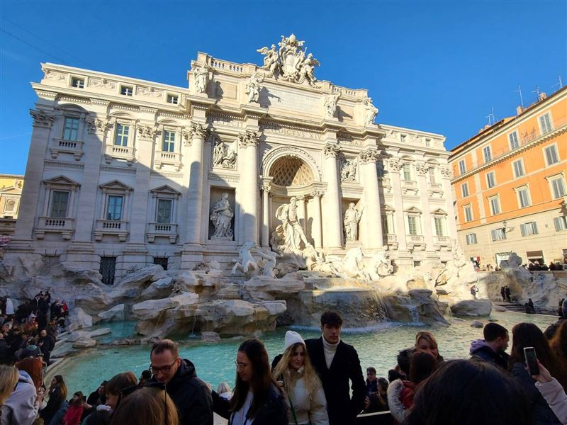
Trevi Fountain
The Trevi Fountain was completed in the 18th century from designs by Nicola Salvi and Giuseppe Pannini at the end of an ancient aqueduct route. Its sculptural facade turned a water terminal into a major Baroque urban landmark in the dense street network of central Rome.
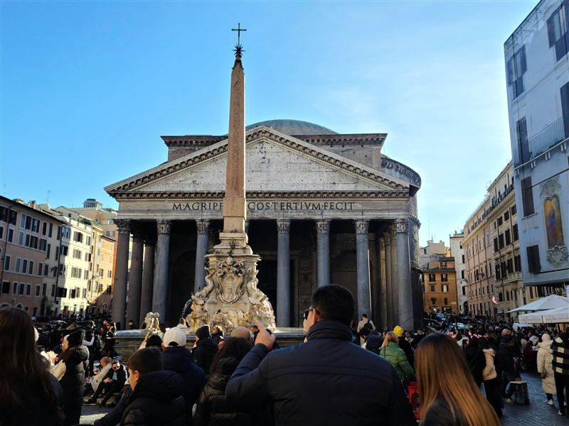
Pantheon
The Pantheon was rebuilt under Hadrian in the 2nd century AD on the site of Agrippa's earlier temple. Its concrete dome and portico made it one of the most studied buildings of antiquity. Since the 7th century it has functioned as a Christian church.
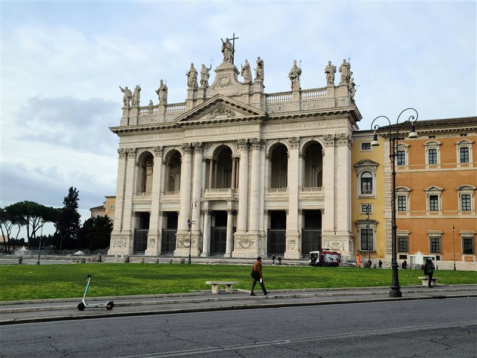
Basilica of San Giovanni in Laterano
San Giovanni in Laterano is the cathedral church of the Diocese of Rome and the ecclesiastical seat of the pope as bishop of Rome. Founded in the 4th century and rebuilt several times, it remains one of the principal basilicas of the Catholic Church in Rome.
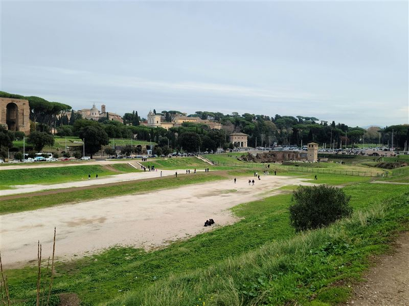
Circus Maximus
Circus Maximus was the largest chariot-racing venue in ancient Rome, stretched through the valley between the Palatine and Aventine hills. Although the track structures largely disappeared, the long open basin still shows the scale of the imperial entertainment ground.
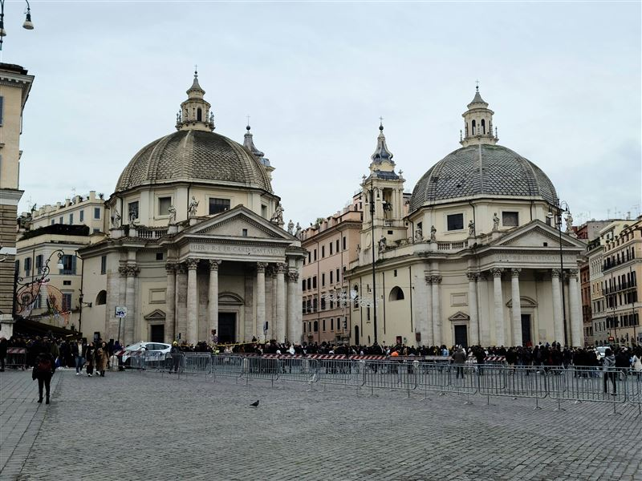
Piazza del Popolo
Piazza del Popolo developed around the northern gate of Rome and was redesigned in its present neoclassical form in the 19th century by Giuseppe Valadier. The square connects ceremonial routes, twin churches, and the ascent to the Pincian terrace in Rome.
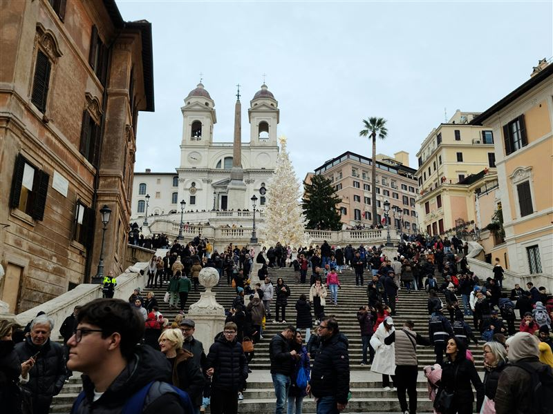
Spanish Steps
The Spanish Steps were completed in 1725 to connect Piazza di Spagna with the Trinita dei Monti church above. The broad stair became a meeting place and visual landmark within the urban sequence of streets, fountains, embassies, and commercial fronts in central Rome.
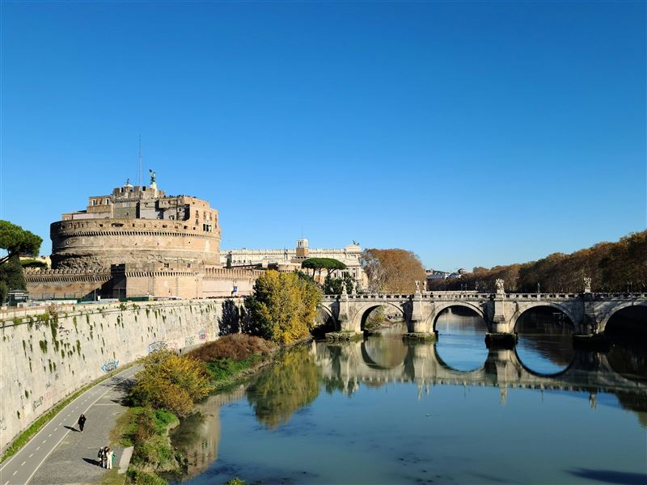
Castel Sant'Angelo
Castel Sant'Angelo began as Hadrian's mausoleum in the 2nd century AD and was later turned into a fortress, papal refuge, prison, and museum. Its position beside the Tiber and the Vatican route gave it a military and ceremonial role across many centuries.